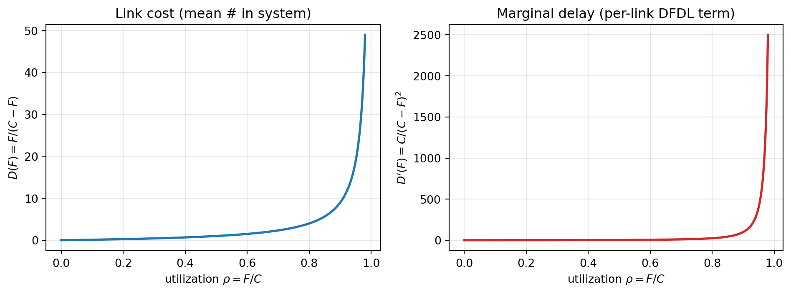
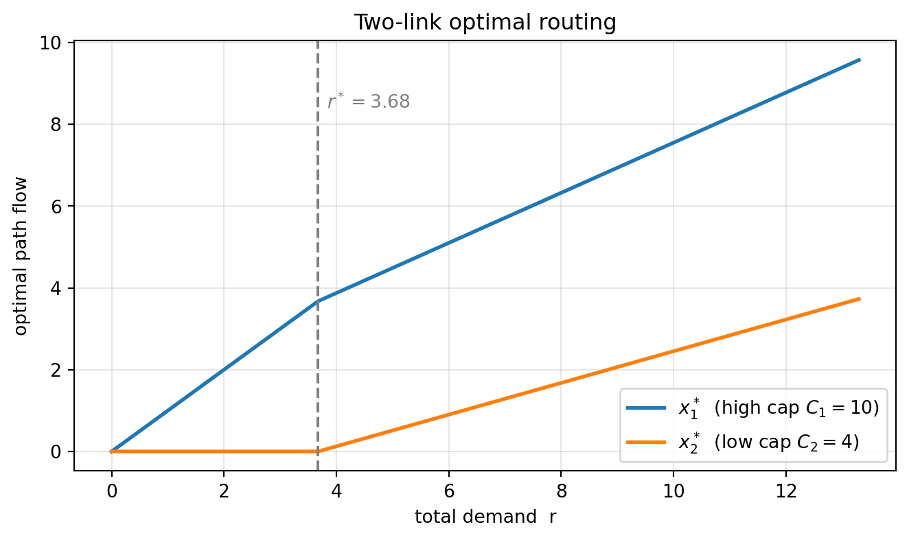
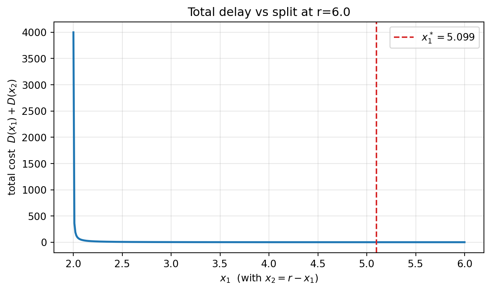

코드 보기
graph LR
S1((source A)) --> J((node J))
S2((source B)) --> J
J --> K((dest K))
S3((source C)) --> Kgraph LR S1((source A)) --> J((node J)) S2((source B)) --> J J --> K((dest K)) S3((source C)) --> K
Data Networks — Routing
June 8, 2026
라우팅은 두 개의 서로 다른 질문으로 나뉜다.
이론적 무게중심은 줄기 B에 있다. 줄기 A는 빠르게 정리하고, B를 first-principles로 깊게 다룬다.
링크 비용함수 D_{ij}(F_{ij}) = \dfrac{F_{ij}}{C_{ij}-F_{ij}} 는 M/M/1 큐의 평균 시스템 내 패킷 수 \rho/(1-\rho) 와 같은 형태다. 따라서 \sum_{(i,j)} D_{ij} 를 최소화하는 일은 Little의 법칙을 거쳐 망 평균 패킷 지연을 최소화하는 일과 동치다. 큐잉 이론이 라우팅 목적함수로 그대로 들어오는 지점이다.
라우터 J 가 I \to K 의 최적 경로 위에 있다면, J \to K 의 최적 경로도 같은 경로를 따른다.
직접적인 따름정리: 한 목적지 K 로 향하는 모든 출발지의 최적 경로 집합은 K 를 뿌리로 하는 트리(sink tree)를 이룬다. 두 최적 경로가 갈라졌다 다시 만나면 루프가 생기거나 둘 중 하나가 더 짧다는 모순이 되므로, 목적지별로 사이클 없는 트리가 된다(유일하지는 않음). 모든 라우팅 프로토콜의 목표는 결국 이 sink tree를 발견하고 사용하는 것이다.
이 성질은 동적 프로그래밍(Bellman 방정식)의 최적 부분구조와 같으며, 그래서 Bellman–Ford가 성립한다.
각 라우터가 (목적지, 거리) 테이블을 유지하고 이웃까지의 거리만 안다는 가정에서 출발한다. 목적지를 노드 1로 고정하면:
D_i^{h+1} = \min_{j}\big[\, d_{ij} + D_j^{h} \,\big], \qquad \forall i \ne 1
직관: “다음 hop j 로 한 걸음(d_{ij}) + 거기서 h hop 이내로 도착(D_j^h)” 을 모든 이웃에 대해 최소화한다. hop 수를 단계 변수로 둔 DP이며, 음의 사이클이 없으면 h = N-1 에서 수렴한다.
목적지는 노드 1. 화살표 위 숫자는 1 방향으로의 링크 비용이다.
graph LR N2((2)) -->|1| N1((1 dest)) N3((3)) -->|4| N1 N3 -->|1| N2 N4((4)) -->|8| N2 N5((5)) -->|2| N3 N5 -->|4| N4
반복을 직접 돌려 수렴을 확인한다.
import math
import pandas as pd
nodes = [1, 2, 3, 4, 5]
# 목적지(1) 방향 out-arc: i -> (j, 비용 d_ij)
arcs = {1: [], 2: [(1, 1)], 3: [(1, 4), (2, 1)], 4: [(2, 8)], 5: [(3, 2), (4, 4)]}
INF = math.inf
D = {i: (0 if i == 1 else INF) for i in nodes}
history = [dict(h=0, **{f"D{i}": D[i] for i in nodes})]
for h in range(1, 5):
newD = {i: (0 if i == 1 else INF) for i in nodes}
for i in nodes:
if i == 1:
continue
cands = [d_ij + D[j] for (j, d_ij) in arcs[i]]
newD[i] = min(cands) if cands else INF
D = newD
history.append(dict(h=h, **{f"D{i}": D[i] for i in nodes}))
pd.DataFrame(history).set_index("h")| D1 | D2 | D3 | D4 | D5 | |
|---|---|---|---|---|---|
| h | |||||
| 0 | 0 | inf | inf | inf | inf |
| 1 | 0 | 1.0 | 4.0 | inf | inf |
| 2 | 0 | 1.0 | 2.0 | 9.0 | 6.0 |
| 3 | 0 | 1.0 | 2.0 | 9.0 | 4.0 |
| 4 | 0 | 1.0 | 2.0 | 9.0 | 4.0 |
h=1 에서 직접 이웃만, h=2 에서 노드 3이 2를 경유해 4\to2 로 개선, h=3 에서 노드 5가 3을 경유해 6\to4 로 개선되며 h=3 에 수렴한다. “좋은 소식”이 한 hop씩 전파되는 그림이다.
좋은 소식(거리 감소)은 빠르게 퍼지지만 나쁜 소식(링크 단절)은 느리게 퍼진다. 링크 A\!-\!B 가 끊겼는데 이웃 C 가 (이미 끊긴 A 를 경유하는 stale 정보로) “나는 B 까지 2면 간다”고 광고하면, A 는 “C 거쳐 3”으로 착각한다. 그러면 C 는 다시 “그럼 4”… 서로의 옛 정보를 믿으며 거리값이 1씩 천천히 \infty 로 올라간다.
각 라우터가 (1) 이웃 발견, (2) 이웃까지 비용 측정, (3) 상태 패킷 생성, (4) 전체 broadcast, (5) 전역 토폴로지로 Dijkstra 계산을 한다.
왜 greedy가 통하는가: arc 길이가 비음수이므로, P 밖에서 가장 가까운 i 를 고르면 i 로 가는 더 짧은 경로는 존재할 수 없다(다른 경로는 더 먼 노드를 경유 → 비음수 가중치로 더 길어짐). 한 번 확정된 노드는 다시 갱신되지 않는다. DV가 hop 수로 DP를 도는 것과 달리 거리 순서로 확정한다.
| 구분 | Distance Vector (BF) | Link State (Dijkstra) |
|---|---|---|
| 정보 범위 | 이웃 정보만, 분산적 | 전역 토폴로지 |
| 수렴 | 느림, count-to-infinity | 빠름, 안정적 |
| 갱신 순서 | hop 수 증가 | 거리 증가 |
링크 단위: F_{ij}(flow), C_{ij}(용량), d_{ij}(전파지연), D_{ij}(비용함수).
D_{ij}(F_{ij}) \;=\; \frac{F_{ij}}{C_{ij}-F_{ij}} \;+\; d_{ij}F_{ij}
첫 항은 M/M/1 평균 패킷 수(\rho/(1-\rho), \rho=F_{ij}/C_{ij}), 둘째 항은 Little에 의한 “전파 중 평균 패킷 수”(d_{ij}\times F_{ij}). 합은 망 전체의 평균 패킷 수이고, 총 외부 도착률 \gamma=\sum_w r_w 로 나누면 망 평균 지연이 된다.
경로 단위: OD pair 집합 W, w 를 잇는 경로 집합 P_w, 경로 flow x_p, 요구 flow r_w.
\sum_{p\in P_w} x_p = r_w \ \ (\forall w), \qquad x_p \ge 0, \qquad F_{ij} = \!\!\sum_{p \ni (i,j)}\!\! x_p
최적 라우팅:
\min_{\{x_p\}}\ D(x) = \sum_{(i,j)} D_{ij}\!\Big(\sum_{p \ni (i,j)} x_p\Big) \quad \text{s.t.}\quad \sum_{p\in P_w} x_p = r_w,\ \ x_p \ge 0
해야 할 일: (1) 경로별 flow 결정, (2) 비용함수 선택, (3) 트래픽을 여러 경로로 분할(splitting). 단일 최단경로가 아니라 분할 라우팅이 일반적으로 최적이라는 점이 줄기 A와의 결정적 차이다.
import numpy as np
import matplotlib.pyplot as plt
C = 1.0
F = np.linspace(0, 0.98 * C, 400)
D = F / (C - F)
Dp = C / (C - F) ** 2
fig, ax = plt.subplots(1, 2, figsize=(10, 3.8))
ax[0].plot(F / C, D, lw=2)
ax[0].set(xlabel=r"utilization $\rho=F/C$", ylabel=r"$D(F)=F/(C-F)$",
title="Link cost (mean # in system)")
ax[0].grid(alpha=0.3)
ax[1].plot(F / C, Dp, lw=2, color="C3")
ax[1].set(xlabel=r"utilization $\rho=F/C$", ylabel=r"$D'(F)=C/(C-F)^2$",
title="Marginal delay (per-link DFDL term)")
ax[1].grid(alpha=0.3)
plt.tight_layout()
plt.show()
경로 p 의 First Derivative Length (DFDL, 1차 미분 길이):
\frac{\partial D(x)}{\partial x_p} \;=\; \sum_{(i,j)\,\in\, p} D'_{ij}(F_{ij})
이것은 “경로 p 에 flow 한 단위를 더 얹을 때 늘어나는 총 비용”, 즉 그 경로의 한계 지연(marginal delay) 이다. 고정 길이가 아니라 현재 부하에서의 미분값을 가중치로 한 길이라는 점이 핵심이다.
도출: x^* 가 최적이면 같은 OD pair 안에서 경로 p 의 flow \delta 를 다른 경로 p' 로 옮겨도 비용이 줄지 않아야 한다. 1차 근사로
\delta\,\frac{\partial D(x^*)}{\partial x_{p'}} - \delta\,\frac{\partial D(x^*)}{\partial x_p} \;\ge\; 0.
각 OD pair w 와 양수 flow 경로 p\in P_w 에 대해 x_p^* > 0 \ \Longrightarrow\ \frac{\partial D(x^*)}{\partial x_p} \le \frac{\partial D(x^*)}{\partial x_{p'}}, \quad \forall p' \in P_w. 즉 flow를 실어 나르는 모든 경로의 한계 지연(DFDL)은 동일한 최소값이고, flow가 0인 경로의 DFDL은 그 값 이상이다.
직관: 물이 수위를 맞추듯, 한계 지연이 더 낮은 경로가 있으면 거기로 트래픽을 옮겨 이득을 본다. 평형(최적)에서는 사용 중인 모든 경로의 한계 지연이 같아진다 — 경제학의 한계효용 균등화, 교통공학의 Wardrop 평형, 최적화의 KKT 조건과 같은 형태다. 평균 지연이 아니라 한계 지연을 균등화한다는 점(system optimal)에 유의.
현재점 x 에서 움직일 방향 \Delta x:
\sum_{w\in W}\sum_{p\in P_w} \frac{\partial D(x)}{\partial x_p}\,\Delta x_p < 0, \qquad \frac{\partial D(x)}{\partial x_p} = \!\!\sum_{(i,j)\ \text{on}\ p}\!\! D'_{ij}(F_{ij}).
이후 step size \alpha>0 를 찾아 D(x+\alpha\Delta x)<D(x). 모든 1차 방법이 “feasible + descent 방향 + step size” 골격을 공유한다.
현재점 x=\{x_p\} 에서:
직관: 비선형 D 를 현재점에서 1차 선형화하면, 선형 목적함수를 단체(simplex) 제약 위에서 최소화하는 해는 항상 꼭짓점(“전부 MFDL로”)이다. 그 방향의 직선 위에서만 최적 비율 \alpha^* 를 찾는다.
비최단 경로에서 MFDL 경로로 같은 비율 \alpha^* 만큼 이동(equal-ratio shift). 단순하지만 최적점 근처에서 지그재그로 수렴이 느리다.
D(x)=\tfrac12\big(x_1^2+x_2^2+0.1x_3^2\big)+0.55x_3,\qquad x_1+x_2+x_3=1,\ x_i\ge0 \frac{\partial D}{\partial x_1}=x_1,\quad \frac{\partial D}{\partial x_2}=x_2,\quad \frac{\partial D}{\partial x_3}=0.1x_3+0.55
링크 3은 상수항 0.55 때문에 한계비용 시작값이 높아, 쓰면 손해다. 최적성 조건을 위반하지 않는 해는 x_3^*=0,\ x_1^*=x_2^*=\tfrac12 뿐이며, 두 경로의 한계비용이 같아지는 지점이다.
무제약 — steepest descent (\nabla^2 f 양반정부호): x^{k+1}=x^k-\alpha^k\nabla f(x^k),\qquad \frac{f(x^{k+1})-f^*}{f(x^k)-f^*}\le\Big(\frac{M-m}{M+m}\Big)^2 M,m 은 Hessian의 최대·최소 고유값. 조건수 M/m 가 클수록(등고선이 길쭉할수록) 느리다. 이를 고치려 양정부호 스케일링 B^k 를 도입: x^{k+1}=x^k-\alpha^k B^k\nabla f(x^k) B^k=[\nabla^2 f(x^k)]^{-1} 이면 Newton’s method(가장 빠르나 역행렬 비용 큼). 절충으로 Hessian의 대각 성분만 역수로 사용: x_i^{k+1}=x_i^k-\alpha^k\Big[\frac{\partial^2 f(x^k)}{\partial x_i^2}\Big]^{-1}\frac{\partial f(x^k)}{\partial x_i}
Positive orthant 제약 (x\ge0): 음수면 0으로 잘라내는 projection [\cdot]^+=\max\{0,\cdot\}: x_i^{k+1}=\max\Big\{0,\ x_i^k-\alpha^k\Big[\frac{\partial^2 f(x^k)}{\partial x_i^2}\Big]^{-1}\frac{\partial f(x^k)}{\partial x_i}\Big\}
핵심 트릭: 등식 제약 \sum_p x_p=r_w 를 없애기 위해 MFDL 경로 p_w 의 flow를 종속변수로 둔다. x_{p_w}=r_w-\!\!\sum_{\substack{p\in P_w\\ p\ne p_w}}\!\! x_p 그러면 비최단 경로 flow만 독립변수가 되어 무제약 + positive orthant 문제로 환원된다.
x_p^{k+1}=\max\Big\{0,\ x_p^k-\alpha^k H_p^{-1}\big(d_p-d_{p_w}\big)\Big\} d_p=\!\!\sum_{(i,j)\in p}\!\! D'_{ij}(F_{ij}),\quad d_{p_w}=\!\!\sum_{(i,j)\in p_w}\!\! D'_{ij}(F_{ij}),\quad H_p=\!\!\sum_{(i,j)\in L_p}\!\! D''_{ij}(F_{ij}) L_p = 경로 p 와 p_w 중 한쪽에만 속하는 링크(대칭차집합). 공통 링크는 flow 이동 시 상쇄되어 빠진다.
직관: (d_p-d_{p_w}) 는 “비최단 경로가 최단보다 한계 지연이 얼마나 더 큰가”이며, 그만큼 비례해서 flow를 줄이고 H_p^{-1} 로 곡률(2차 정보)을 반영해 step을 조절한다. FW와 달리 경로마다 다른 양을 옮긴다(unequal shift) → 빠른 수렴.
graph LR N1((1)) --> N3((3)) N1 --> N4((4)) N2((2)) --> N3 N2 --> N4 N3 --> N4 N4 --> N5((5 dest))
OD (1,5): r_1=4, OD (2,5): r_2=8. 비용 D_{ij}(F_{ij})=\tfrac12 F_{ij}^2 → D'_{ij}=F_{ij},\ D''_{ij}=1.
경로 p_1(1)=\{1,4,5\},\ p_2(1)=\{1,3,4,5\} / p_1(2)=\{2,4,5\},\ p_2(2)=\{2,3,4,5\}. 초기 링크 flow F_{13}=4,\ F_{14}=0,\ F_{23}=8,\ F_{24}=0,\ F_{34}=12,\ F_{45}=12.
d_{p_1(1)}=F_{14}+F_{45}=0+12=12,\qquad d_{p_2(1)}=F_{13}+F_{34}+F_{45}=4+12+12=28
MFDL은 p_1(1)(=12). 그런데 flow는 더 긴 p_2(1) 에 4가 실려 있으니 옮겨야 한다. L_p=\{(1,3),(3,4)\}\cup\{(1,4)\}=\{(1,3),(3,4),(1,4)\} → H_p=1+1+1=3.
x_{p_2(1)} := \max\Big\{0,\ 4-\frac{\alpha^k}{3}(28-12)\Big\}=\max\Big\{0,\ 4-\frac{16\alpha^k}{3}\Big\}, \qquad x_{p_1(1)} := r_1-x_{p_2(1)}
| Frank–Wolfe | Gradient Projection | |
|---|---|---|
| 사용 정보 | 1차 (DFDL) | 1·2차 (H_p) |
| flow 이동 | MFDL로 같은 비율 | 경로별 다른 양 |
| 수렴 | 느림(지그재그) | 빠름 |
| 구현 | 단순(LP+직선탐색) | 약간 복잡(대각 Hessian) |
flowchart TD
A["현재 flow x"] --> B["각 링크 한계비용 D'(F_ij) 계산"]
B --> C["각 OD pair에서 MFDL 경로 탐색"]
C --> Dn{"방법 선택"}
Dn -->|"Frank-Wolfe"| E["트래픽을 MFDL로 몰아 x̄ 구성<br/>[0,1] 직선탐색으로 α*"]
Dn -->|"Gradient Projection"| F["비최단 경로 flow를<br/>H_p⁻¹(d_p − d_pw) 만큼 이동"]
E --> G["x 갱신"]
F --> G
G --> H{"수렴?"}
H -->|"No"| A
H -->|"Yes"| I["최적 라우팅 달성"]flowchart TD
A["현재 flow x"] --> B["각 링크 한계비용 D'(F_ij) 계산"]
B --> C["각 OD pair에서 MFDL 경로 탐색"]
C --> Dn{"방법 선택"}
Dn -->|"Frank-Wolfe"| E["트래픽을 MFDL로 몰아 x̄ 구성<br/>[0,1] 직선탐색으로 α*"]
Dn -->|"Gradient Projection"| F["비최단 경로 flow를<br/>H_p⁻¹(d_p − d_pw) 만큼 이동"]
E --> G["x 갱신"]
F --> G
G --> H{"수렴?"}
H -->|"No"| A
H -->|"Yes"| I["최적 라우팅 달성"]
OD 한 쌍, 두 평행 링크(고용량 C_1, 저용량 C_2), 요구 r.
graph LR O((1 origin)) -->|"x1 (high cap C1)"| Dst((2 dest)) O -->|"x2 (low cap C2)"| Dst
D(x)=D_1(x_1)+D_2(x_2),\quad D_i(x_i)=\frac{x_i}{C_i-x_i},\quad x_1^*+x_2^*=r,\ x_i^*\ge0
한계 지연을 직접 계산(몫의 미분): D'_i(x_i)=\frac{d}{dx_i}\frac{x_i}{C_i-x_i} =\frac{(C_i-x_i)+x_i}{(C_i-x_i)^2}=\frac{C_i}{(C_i-x_i)^2}
Case 1 — 고용량 링크만 사용 (x_1^*=r,\ x_2^*=0): 사용 경로(1)의 DFDL ≤ 미사용 경로(2)의 DFDL: \frac{C_1}{(C_1-r)^2}\le\frac{C_2}{C_2^2}=\frac{1}{C_2} \ \Rightarrow\ C_1C_2\le(C_1-r)^2 \ \Rightarrow\ \boxed{\,r\le C_1-\sqrt{C_1C_2}\,}
부하 r 이 충분히 작으면 두 링크에 나누지 않고 빠른 링크 하나에 다 몰아넣는 것이 최적이다. 저용량 링크는 비어 있어도 한계 지연 시작값 1/C_2 가 크기 때문에, r 이 문턱 r^*=C_1-\sqrt{C_1C_2} 를 넘기 전까지는 손대지 않는 편이 이득이다.
Case 2 — 두 링크 모두 사용 (x_1^*,x_2^*>0): 사용 경로들의 DFDL이 같아야 한다. \frac{C_1}{(C_1-x_1^*)^2}=\frac{C_2}{(C_2-x_2^*)^2} \ \Rightarrow\ \frac{\sqrt{C_1}}{C_1-x_1^*}=\frac{\sqrt{C_2}}{C_2-x_2^*} x_2^*=r-x_1^* 대입, 교차곱 후 x_1^* 로 정리: x_1^*(\sqrt{C_1}+\sqrt{C_2})=\sqrt{C_1}\big[r-(C_2-\sqrt{C_1C_2})\big]
\boxed{\,x_1^*=\frac{\sqrt{C_1}\big[r-(C_2-\sqrt{C_1C_2})\big]}{\sqrt{C_1}+\sqrt{C_2}},\qquad x_2^*=\frac{\sqrt{C_2}\big[r-(C_1-\sqrt{C_1C_2})\big]}{\sqrt{C_1}+\sqrt{C_2}}\,} \quad\big(r>C_1-\sqrt{C_1C_2}\big)
(문턱 r=r^* 에서 x_2^*=0,\ x_1^*=r^* 로 Case 1과 연속적으로 이어진다.)
import numpy as np
import matplotlib.pyplot as plt
C1, C2 = 10.0, 4.0
r_star = C1 - np.sqrt(C1 * C2)
def split(r):
if r <= r_star:
return r, 0.0
s1, s2 = np.sqrt(C1), np.sqrt(C2)
x1 = s1 * (r - (C2 - np.sqrt(C1 * C2))) / (s1 + s2)
x2 = s2 * (r - (C1 - np.sqrt(C1 * C2))) / (s1 + s2)
return x1, x2
rs = np.linspace(0, 0.95 * (C1 + C2), 400)
X1 = np.array([split(r)[0] for r in rs])
X2 = np.array([split(r)[1] for r in rs])
plt.figure(figsize=(7, 4.2))
plt.plot(rs, X1, lw=2, label=r"$x_1^*$ (high cap $C_1=10$)")
plt.plot(rs, X2, lw=2, label=r"$x_2^*$ (low cap $C_2=4$)")
plt.axvline(r_star, ls="--", color="gray")
plt.text(r_star + 0.15, 8.4, rf"$r^*={r_star:.2f}$", color="gray")
plt.xlabel("total demand r")
plt.ylabel("optimal path flow")
plt.title("Two-link optimal routing")
plt.legend()
plt.grid(alpha=0.3)
plt.tight_layout()
plt.show()
import numpy as np
import matplotlib.pyplot as plt
C1, C2, r = 10.0, 4.0, 6.0
x1 = np.linspace(r - C2 + 1e-3, min(r, C1) - 1e-3, 400)
x2 = r - x1
Dtot = x1 / (C1 - x1) + x2 / (C2 - x2)
s1, s2 = np.sqrt(C1), np.sqrt(C2)
x1_opt = s1 * (r - (C2 - np.sqrt(C1 * C2))) / (s1 + s2)
# 최적점에서 두 한계지연이 같은지 수치 확인
g1 = C1 / (C1 - x1_opt) ** 2
g2 = C2 / (C2 - (r - x1_opt)) ** 2
print(f"x1* = {x1_opt:.4f}, x2* = {r - x1_opt:.4f}")
print(f"DFDL link1 = {g1:.5f}, DFDL link2 = {g2:.5f} (거의 동일)")
plt.figure(figsize=(7, 4.2))
plt.plot(x1, Dtot, lw=2)
plt.axvline(x1_opt, ls="--", color="C3", label=rf"$x_1^*={x1_opt:.3f}$")
plt.xlabel(r"$x_1$ (with $x_2 = r - x_1$)")
plt.ylabel(r"total cost $D(x_1)+D(x_2)$")
plt.title(f"Total delay vs split at r={r}")
plt.legend()
plt.grid(alpha=0.3)
plt.tight_layout()
plt.show()x1* = 5.0994, x2* = 0.9006
DFDL link1 = 0.41639, DFDL link2 = 0.41639 (거의 동일)
세 개 이상의 평행 경로(각 D_p(x_p)=\dfrac{x_p}{C_p-x_p})도 동일 전략으로 푼다. (1) D'_p(x_p)=\dfrac{C_p}{(C_p-x_p)^2} 계산 → (2) 최적성 조건으로 “어떤 경로가 켜지는가” case 분석 → (3) 켜진 경로들의 DFDL을 모두 같게 놓고 \sum_p x_p=r 과 연립. C_1>C_2>C_3 이면 r 이 커질수록 빠른 링크부터 차례로 켜진다.
노드 위치와 OD별 flow F_{ij} 가 주어졌을 때, 단가 p_{ij} 로 용량을 사서 평균지연을 T 이하로 맞추며 비용 최소화: \min \sum_{(i,j)} p_{ij}C_{ij}\quad \text{s.t.}\quad \frac{1}{\gamma}\sum_{(i,j)}\frac{F_{ij}}{C_{ij}-F_{ij}}\le T Lagrangian L=\sum_{(i,j)}\big(p_{ij}C_{ij}+\dfrac{\beta F_{ij}}{\gamma(C_{ij}-F_{ij})}\big) 에서 \partial L/\partial C_{ij}=0: C_{ij}=F_{ij}+\sqrt{\frac{\beta F_{ij}}{\gamma p_{ij}}},\qquad \beta=\Big(\frac{1}{T\gamma}\sum_{(i,j)}\sqrt{p_{ij}F_{ij}}\Big)^2
해석: 최적 용량 = “flow 자체 + 여유분”이고, 여유분이 \sqrt{F_{ij}/p_{ij}} 에 비례한다 — 트래픽 많은 링크엔 더, 비싼 링크엔 덜(square-root capacity assignment).
소스 i 를 집중기 j 에 연결할지 x_{ij}\in\{0,1\}: \min \sum_i\sum_j a_{ij}x_{ij}\quad \text{s.t.}\quad \sum_j x_{ij}=1\ (\forall i),\ \ \sum_i x_{ij}\le K_j 는 simplex로 풀고, 집중기 설치 여부 y_j\in\{0,1\} 와 설치비 b_j 까지 넣으면 정수계획(facility location) 문제가 된다.
| 주제 | 한 줄 요약 |
|---|---|
| Optimality principle | 최적 경로의 부분경로도 최적 → sink tree |
| Bellman–Ford | hop 수 DP, D_i^{h+1}=\min_j[d_{ij}+D_j^h], count-to-infinity |
| Dijkstra | 거리 순서로 greedy 확정(비음수 가중치) |
| 최적 라우팅 | 부하 의존 비용의 비선형 최적화, 분할 라우팅 |
| DFDL 조건 | 사용 경로 한계지연 균등화 |
| Frank–Wolfe | 선형화 → MFDL 극단점 → 직선탐색(equal-ratio) |
| Gradient projection | 2차 정보로 경로별 unequal shift, 빠름 |
| Two-link | r\le C_1-\sqrt{C_1C_2} 이면 빠른 링크 단독 사용 |
| Capacity assignment | square-root 용량 배분 |